Pogled
na podatkovno tabelo
Pogled na podatkovno tabelo prikazuje tabelo s podatki o sledeh. Ima svojo lastno orodno vrsticoza izbiranje sledi in stolpcev z vidnimi podatki. Podatke, prikazane v tabeli, lahko analiziramo s Podatkovnim orodjem ali kopiramo v odložišče za prenos v preglednico ali kakšno drugo aplikacijo.
1.Izbiranje sledi
V orodni vrstici podatkovne tabele imamo menu in izberemo sled.
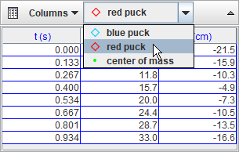
2. Izbiranje stolpcev z vidnimi podatki
Stolpce, ki naj bodo prikazani v tabeli izberemo s klikom na gumb Podatki in z odkljukanjem opazovanih podatkov. Stolpec s časom je vedno viden.
Celice, za katere ni podatkov, so prazne. Posebno hitrosti in pospeški v začetku ne morejo biti določeni, prav tako ne, če obstajajo v časovnem zaporedju položajev luknje.
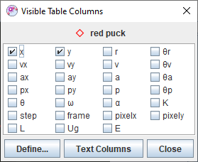 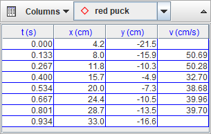
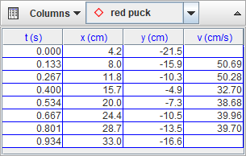
3. Sortiranje vrstic
S klikom na glavo stolpca sortiramo vrstice v naraščajočem zaporedju podatkov kliknjenega stolpca. Ime sortiranjega stolpca je prikazano poudarjeno.
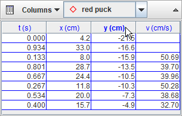
4. Formatiranje podatkovnih stolpcev
Z desnim mišjim gumbom kliknemo na tabelo in za prikaz pogovornega okna o številčnih formatih izberemo v spustnem menuju Formatiranje stolpcev... .
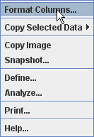
V pogovornem oknu izberemo imena stolpcev, ki jih želimo formatirati. S tipkama shift in CTRL dodajamo ali odstranjujemo imena iz izbora. V ustrezno polje vnesemo želeni format za izbrane stolpce. Vzorčno polje prikazuje rezultat formata, uporabljenega na štrvilu PI.
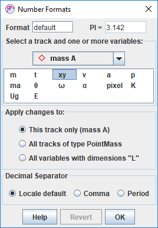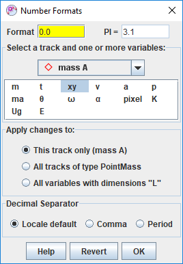
Prikaz vzorčnih formatov prikažemo s tipko za Pomoč.
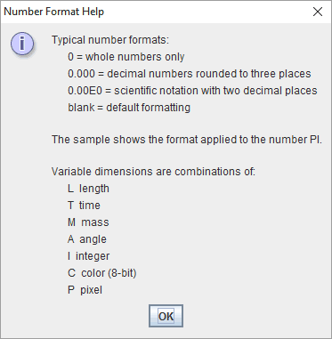
5. Izbiranje podatkovnih celic
Celice izbiramo s klikom in vlečenjem. Z dvoklikom na poljubno celico izberemo vse celice. Dvoklik na glavo stolpca izbere ta stolpec.
CTRL-klik na celico doda ali odvzame dano vrstico in stolpec iz trenutnega izbora. CTERL-klik na glavo stolpca doda ali odvzame ta stolpec iz trenutnega izbora.
Shift-klik na celico doda to in vse vplivne vrstice in stolpce trenutnemu izboru. Shift-klik na stolpec doda tega in vse vplivne stolpce v trenutni izbor.
 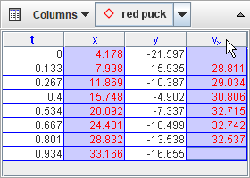
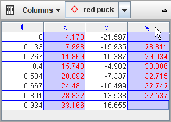
Izbor vseh celic prekličemo s klikom na prazno področje pod podatkovno tabelo.
6. Kopiranje podatkov
Z desnim mišjim gumbom kliknemo na tabelo in v spustnem menuju izberemo Kopiranje izbranih podatkov. Izbrane celice se tako skopirajo v odložišče. Na računalnikih Mac izberemo eno celico, nato tiščimo hkrati gumba shift in CTRL in kliknemo na drugo celico ter tako izberemo vključeno območje ter menu za kopiranje.
Vrednosti celic lahko kopiramo v polni znanstveni notaciji z uporabo formata, prikazanega v tabeli.
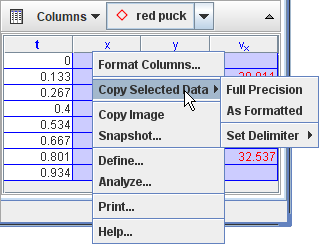
Privzeto se celice kopirajo kot nizi, ločeni s tabulatorjem med stolpci in povratki vrstice med vrsticami. Ločilo stolpcev lahko tudi spremenimo z menujsko postavko Postavi ločilo.
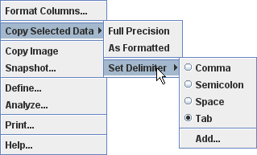
7. Definiranje novih podatkovnih stolpcev z Graditeljem podatkov
Z desnim mišjim gumbom kliknemo na tabelo in izberemo Definiraj... . Prikaže se Graditelj podatkov, s katerim lahko definiramo lastne spremenljivke, ki jim pravimo tudi Podatkovne funkcije. Te uporabljamo v diagramih in podatkovnih tabelah. Kliknemo na ustrezen gumb Dodaj in definiramo nove podatkovne funkcije ali definiramo parametre za uporabo v funkcijskih izrazih.
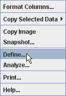
Podatkovne funkcije so lahko katerakoli funkcije parametrov, podatkovnih stolpcev, definiranih s sledmi ali drugih podatkovnih funkcij.


8. Analiza podatkov s podatkovnim orodjem
Z desnim mišjim gumbom kliknemo na tabelo in izberemo Analiziraj... Tako vse vidne stolpce odpremo v Podatkovnem orodju.
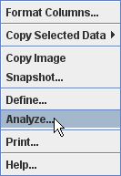
Podatkovno orodje nudi statistično analizo vključno z avtomatskim ali ročnim prilagajanjem krivulj vseh podatkov ali poljubno izbrane podmnožice. Pomoč, kako uporabiti podatkovno orodje, dobimo tako, da orodje odpremo in kliknemo na njegov gumb Pomoč.